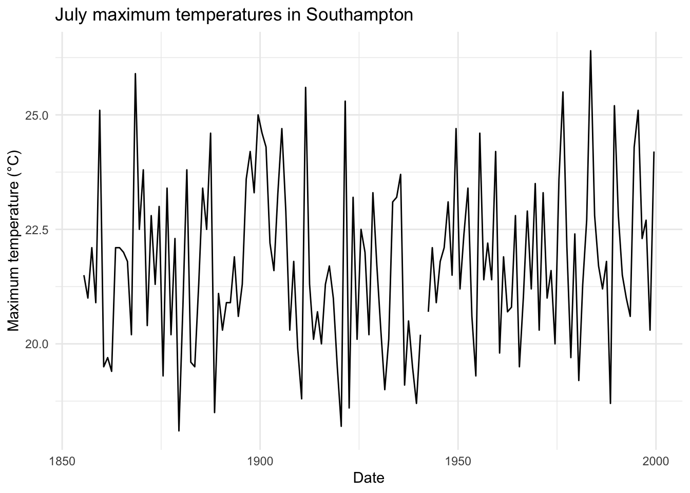
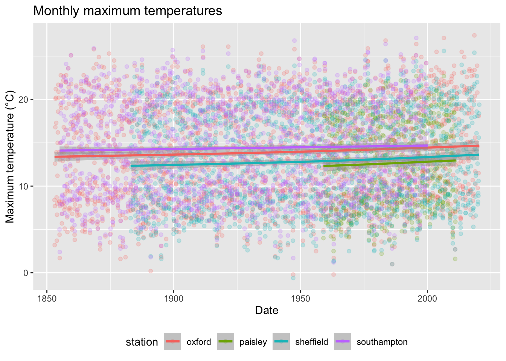
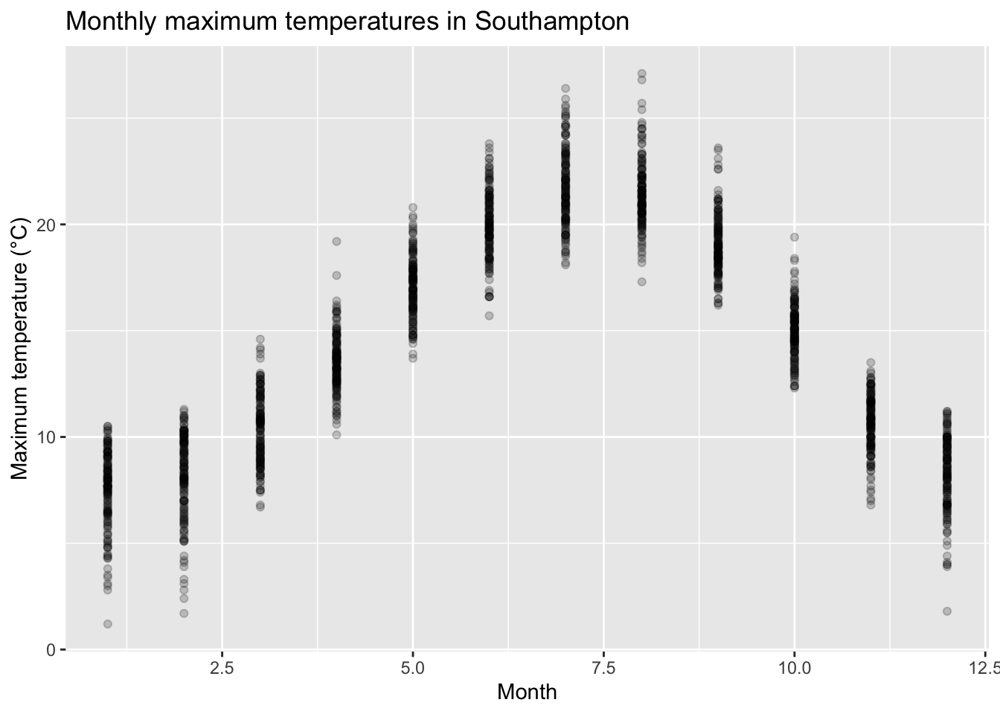
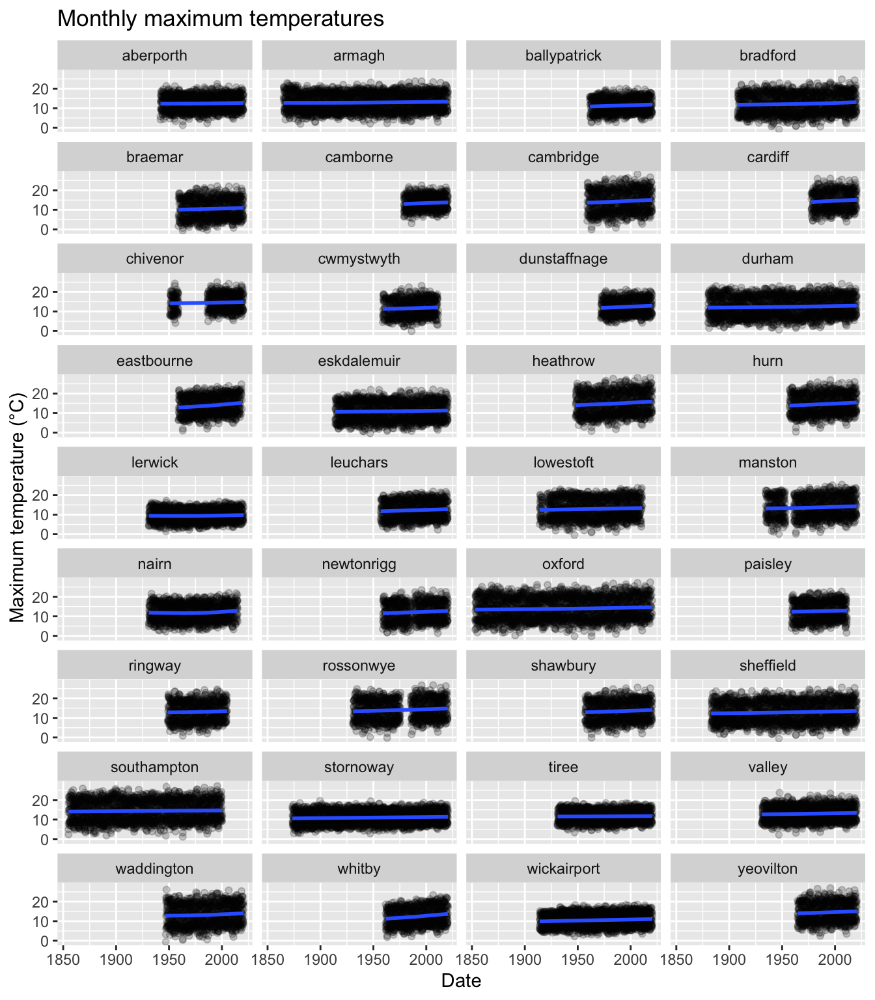
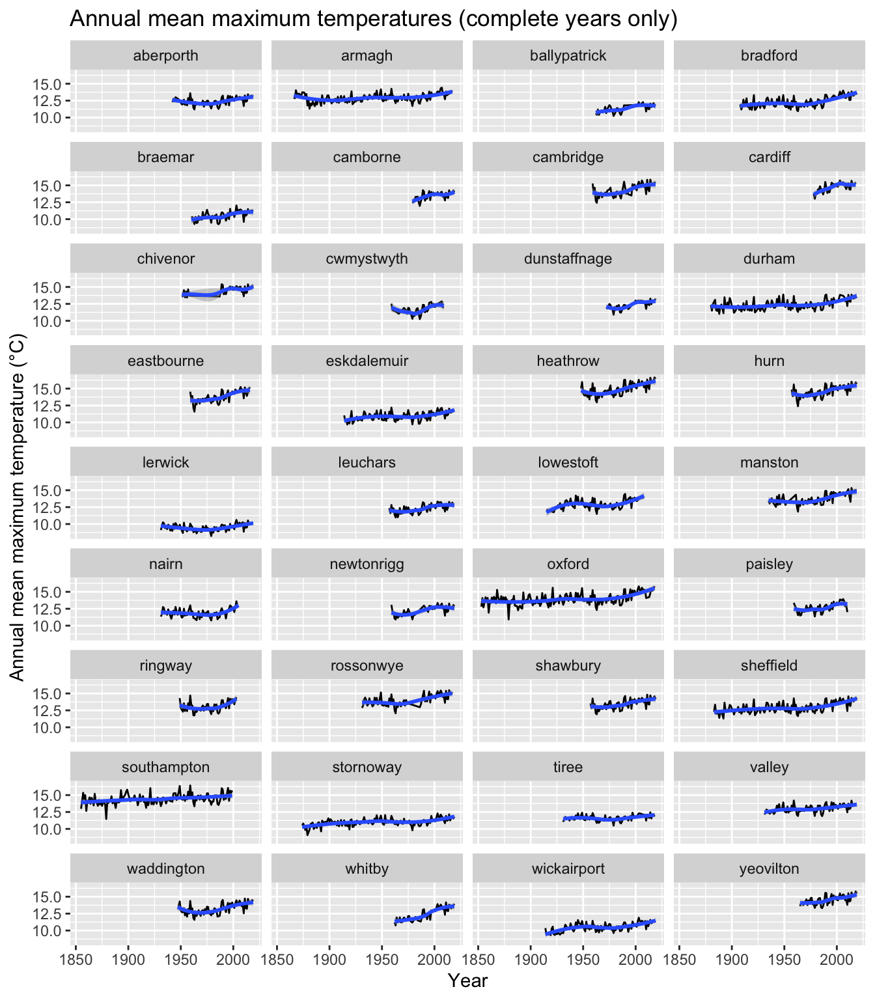
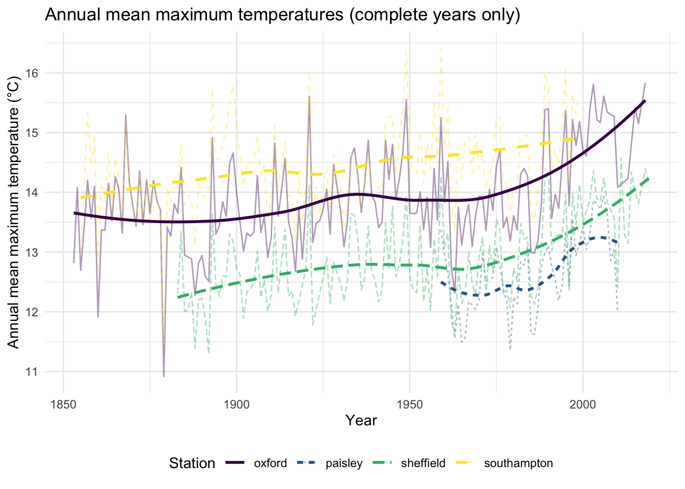
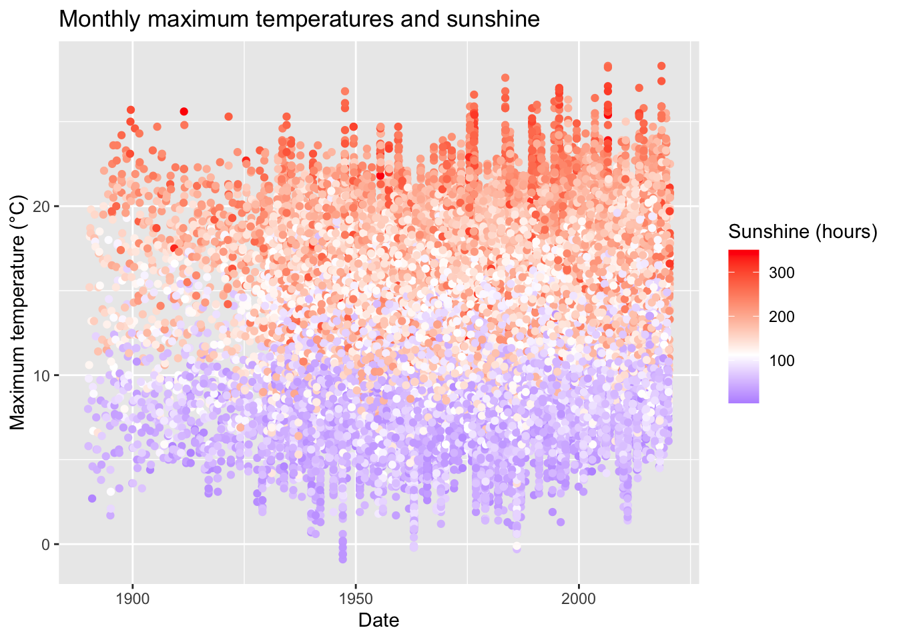
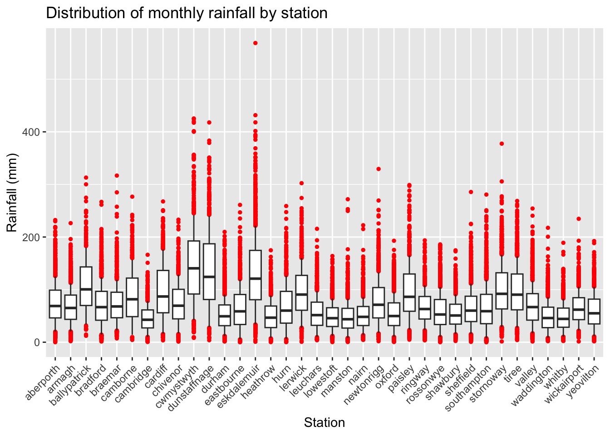
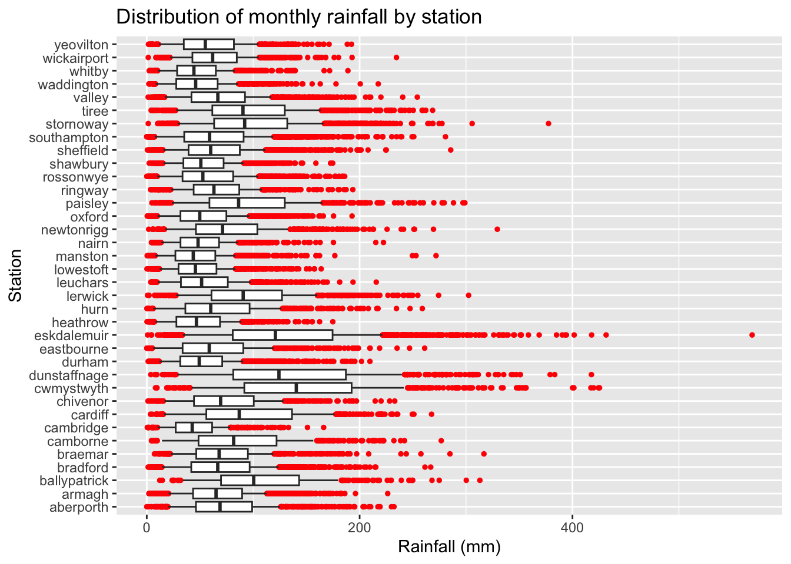
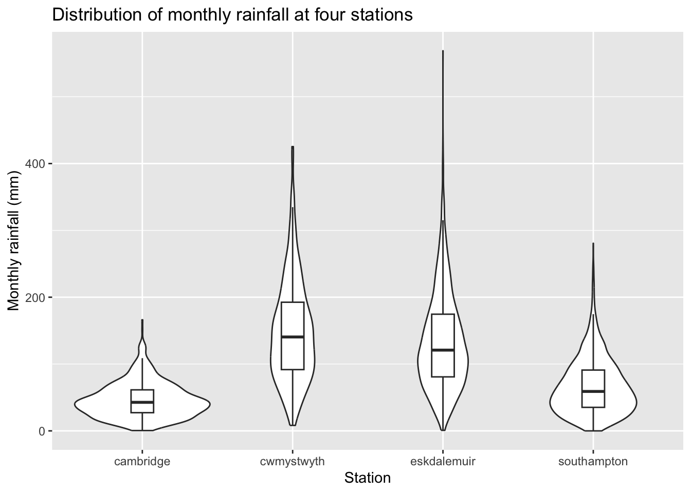

These questions are for extra practice after Lab 6, using the same data. Tasks 1–4 follow on from Task 1 of the lab (temperature), and Tasks 5 and 6 from Task 2 of the lab (rainfall). Questions marked Extension are more challenging.
The cell below loads the weather data, and recreates the annual mean maximum temperatures for Southampton, Oxford, Sheffield and Paisley from Task 1 of the lab.
library(tidyverse)
Warning: package 'dplyr' was built under R version 4.4.3
met <-read_csv("data/MET Office Weather Data.csv")met <- met |>mutate(date =make_date(year, month, 1))stations <-c("southampton", "oxford", "sheffield", "paisley")annual <- met |>filter(station %in% stations) |>group_by(station, year) |>summarise(mean_tmax =mean(tmax, na.rm =TRUE),n_months =sum(!is.na(tmax)),.groups ="drop" )
Task 1: Themes and Legends
Solution. Themes are added like any other layer:
met |>filter(station =="southampton"& month ==7) |>ggplot(aes(x = date, y = tmax)) +geom_line() +labs(x ="Date",y ="Maximum temperature (°C)",title ="July maximum temperatures in Southampton" ) +theme_minimal()

A theme changes only the non-data parts of the plot: the background, gridlines, borders and fonts. The line itself, the axes and the scales are unchanged. The default theme (theme_grey()) has a grey background with white gridlines; theme_minimal() removes the background and border, and theme_bw() uses a white background with a black border. The lighter themes often work better in reports and when printed.
The legend position is also part of the theme, so we change it with theme():
met |>filter(station %in% stations) |>ggplot(aes(x = date, y = tmax, colour = station)) +geom_point(alpha =0.2) +geom_smooth() +labs(x ="Date",y ="Maximum temperature (°C)",title ="Monthly maximum temperatures" ) +theme(legend.position ="bottom")
`geom_smooth()` using method = 'gam' and formula = 'y ~ s(x, bs = "cs")'
Warning: Removed 172 rows containing non-finite outside the scale range
(`stat_smooth()`).
Warning: Removed 172 rows containing missing values or values outside the scale range
(`geom_point()`).

With the legend at the bottom, the plot itself can use the full width of the page.
Task 2: The Seasonal Cycle and Facets
Solution. Plotting against month shows the seasonal cycle:
met |>filter(station =="southampton") |>ggplot(aes(x = month, y = tmax)) +geom_point(alpha =0.2) +labs(x ="Month",y ="Maximum temperature (°C)",title ="Monthly maximum temperatures in Southampton" )
Warning: Removed 14 rows containing missing values or values outside the scale range
(`geom_point()`).

Mean maximum temperatures in Southampton range from about 7.5°C in January to about 22°C in July, a swing of roughly 14°C. The smooth lines in the scatter plot changed by only a degree or so over the whole record, so the seasonal cycle completely dominates that plot.
The same scatter plot for all stations:
met |>ggplot(aes(x = date, y = tmax)) +facet_wrap(~station, ncol =4) +geom_point(alpha =0.2) +geom_smooth() +labs(x ="Date",y ="Maximum temperature (°C)",title ="Monthly maximum temperatures" )
`geom_smooth()` using method = 'gam' and formula = 'y ~ s(x, bs = "cs")'
Warning: Removed 1619 rows containing non-finite outside the scale range
(`stat_smooth()`).
Warning: Removed 1619 rows containing missing values or values outside the scale range
(`geom_point()`).

This is consistent with the four-station plot: at most stations the smooth line creeps upwards, and at none does it clearly fall. However, the plot does not really confirm a trend. Each panel has to cover the whole seasonal range of temperatures, so a change of a degree or so is barely visible.
For the extension, we compute the annual means for every station, keep only complete years, and facet:
met |>group_by(station, year) |>summarise(mean_tmax =mean(tmax, na.rm =TRUE),n_months =sum(!is.na(tmax)),.groups ="drop" ) |>filter(n_months ==12) |>ggplot(aes(x = year, y = mean_tmax)) +facet_wrap(~station, ncol =4) +geom_line() +geom_smooth() +labs(x ="Year",y ="Annual mean maximum temperature (°C)",title ="Annual mean maximum temperatures (complete years only)" )
`geom_smooth()` using method = 'loess' and formula = 'y ~ x'

Now a rise is visible at most stations, especially over the last few decades, which the faceted plot of monthly values could not show.
Task 3: Colour Blindness
Solution. The default colours are hard to tell apart for a reader with red–green colour blindness, and impossible to distinguish in black and white. We can fix this by using a colourblind-safe palette (viridis), and by adding a redundant encoding, so that the plot does not rely on colour alone. For points, the notes use shape; for lines, the equivalent is linetype. Mapping station to both colour and linetype means each station differs in both. We give both the same legend title in labs, so that ggplot combines them into a single legend:
annual |>filter(n_months ==12) |>ggplot(aes(x = year, y = mean_tmax, colour = station, linetype = station)) +geom_line(alpha =0.4) +geom_smooth(se =FALSE) +scale_colour_viridis_d() +labs(x ="Year",y ="Annual mean maximum temperature (°C)",colour ="Station",linetype ="Station",title ="Annual mean maximum temperatures (complete years only)" ) +theme_minimal() +theme(legend.position ="bottom")
`geom_smooth()` using method = 'loess' and formula = 'y ~ x'

With four overlapping line types the raw annual values become cluttered, so we have made them fainter with alpha, and removed the confidence bands (se = FALSE) so that the smooth trend lines stand out. We also switched to theme_minimal(): the yellow end of the viridis palette is hard to see against the default grey background. Note that theme(legend.position = "bottom") comes aftertheme_minimal(); a complete theme like theme_minimal() resets all theme settings, so it would undo the legend position if it came afterwards.
Task 4: Temperature and Sunshine
Solution.
met |>filter(!is.na(sun)) |>ggplot(aes(x = date, y = tmax, colour = sun)) +geom_point() +scale_colour_gradient2(low ="blue",mid ="white",high ="red",midpoint =median(met$sun, na.rm =TRUE) ) +labs(x ="Date",y ="Maximum temperature (°C)",colour ="Sunshine (hours)",title ="Monthly maximum temperatures and sunshine" )
Warning: Removed 465 rows containing missing values or values outside the scale range
(`geom_point()`).

Higher temperatures are typically associated with more sunlight: the red (sunny) points are concentrated at the top of the plot, and the blue points at the bottom. This does not necessarily mean the sun is causing the higher temperatures, though. Both are strongly related to the season: summer months are both sunnier and warmer than winter months.
Task 5: Comparing Stations
Solution. Armagh and Oxford have the longest records (2,010 rows each, going back to 1853), while Camborne has the shortest (502 rows, from 1978). This means that an average over “all months and years” covers different periods at different stations. If the climate has changed over time, the comparison is not like for like. We saw in Task 1 of the lab that temperatures have risen, so a station with only a recent record would look warmer for that reason alone. (For rainfall the effect appears to be small: for example, Oxford’s mean monthly rainfall is about 55 mm both before and after 1959.)
Note also that these are counts of rows, not of measurements. The count includes rows where rain is NA: at Ballypatrick, for example, 331 of the 709 rows have no rainfall value.
Task 6: More Distributions
Solution. The whisker length is controlled by coef: the whiskers extend up to coef times the interquartile range (IQR) beyond the box, and points outside them are drawn as outliers.
met |>ggplot(aes(x = station, y = rain)) +# coef determines how many times the interquartile range the whiskers extend from the box.geom_boxplot(outlier.colour ="red", outlier.size =1, coef =0.5) +theme(axis.text.x =element_text(angle =45, hjust =1)) +labs(x ="Station",y ="Rainfall (mm)",title ="Distribution of monthly rainfall by station" )
Warning: Removed 1498 rows containing non-finite outside the scale range
(`stat_boxplot()`).

Reducing coef from its default of 1.5 to 0.5 shortens the whiskers, so that points at both ends are drawn as outliers. Note that this is a display choice: it changes which points are drawn as outliers, not anything about the data. With coef = 0.5 over 5,000 months are marked as outliers, so they are hardly unusual.
To flip the axes, we can swap x and y in the aes (and the labels to match):
met |>ggplot(aes(x = rain, y = station)) +# coef determines how many times the interquartile range the whiskers extend from the box.geom_boxplot(outlier.colour ="red", outlier.size =1, coef =0.5) +labs(y ="Station",x ="Rainfall (mm)",title ="Distribution of monthly rainfall by station" )
Warning: Removed 1498 rows containing non-finite outside the scale range
(`stat_boxplot()`).

Alternatively, we can keep the original code and add coord_flip(), which flips the coordinate system after everything else has been drawn. The labels do not need to change, because they are still attached to the original x and y aesthetics. Both approaches give the same plot:
met |>ggplot(aes(x = station, y = rain)) +# coef determines how many times the interquartile range the whiskers extend from the box.geom_boxplot(outlier.colour ="red", outlier.size =1, coef =0.5) +labs(x ="Station",y ="Rainfall (mm)",title ="Distribution of monthly rainfall by station" ) +coord_flip()
Warning: Removed 1498 rows containing non-finite outside the scale range
(`stat_boxplot()`).
For the violin plot, we filter to the chosen stations and add the two geometries as layers. Setting width = 0.15 makes the box plot narrow enough to sit inside the violin, and outlier.shape = NA hides the box plot’s outliers, since the violin already shows the tails:
met |>filter(station %in%c("southampton", "cwmystwyth", "eskdalemuir", "cambridge")) |>ggplot(aes(x = station, y = rain)) +geom_violin() +geom_boxplot(width =0.15, outlier.shape =NA) +labs(x ="Station",y ="Monthly rainfall (mm)",title ="Distribution of monthly rainfall at four stations" )
Warning: Removed 64 rows containing non-finite outside the scale range
(`stat_ydensity()`).
Warning: Removed 64 rows containing non-finite outside the scale range
(`stat_boxplot()`).

The box plot summarises each distribution with five numbers, while the violin shows its full shape: where the values are concentrated and how quickly they thin out. Here it shows that every station is right-skewed, with a long, thin tail of wet months. It also shows that at the drier stations (Cambridge and Southampton) most months are packed closely together at around 40 mm, while at the wetter stations (Cwmystwyth and Eskdalemuir) the rainfall is much more spread out.
For the extension, we rescale the histogram to a density with after_stat(density), so that it is on the same scale as the density curve:
met |>ggplot(aes(x = rain)) +geom_histogram(aes(y =after_stat(density)), bins =50) +geom_density(linewidth =1) +labs(x ="Monthly rainfall (mm)",y ="Density",title ="Distribution of monthly rainfall across all stations" )
Warning: Removed 1498 rows containing non-finite outside the scale range
(`stat_bin()`).
Warning: Removed 1498 rows containing non-finite outside the scale range
(`stat_density()`).